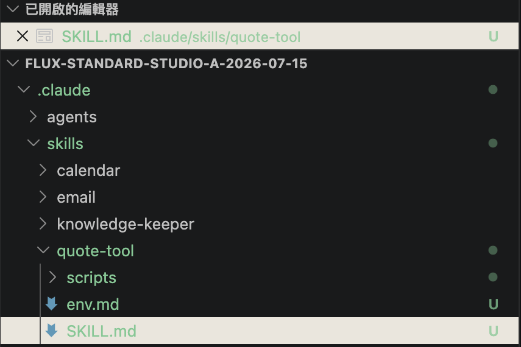
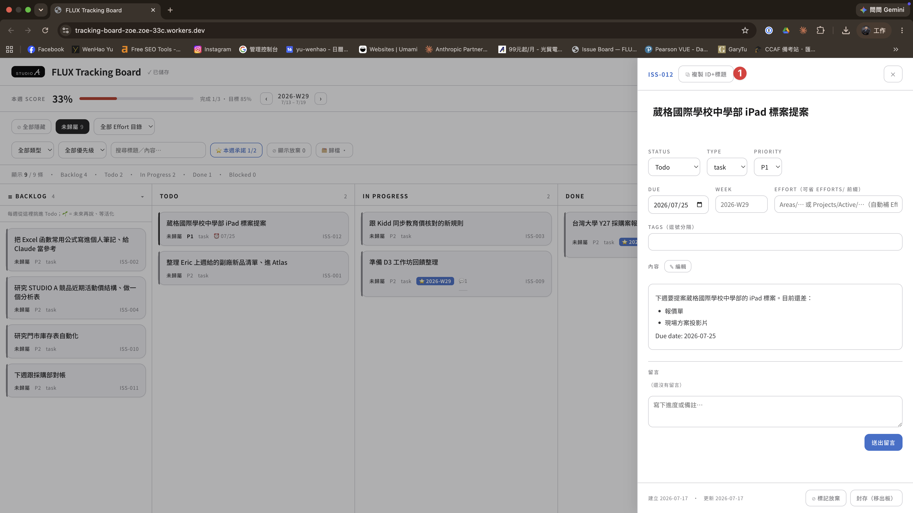

STUDIO A. ／ F 組 · D3
DAY 3 / 3Vibe Coding · 做出自己的工具
skill 建好了 ——
這天，你 vibe 出自己的工具。
這天，你 vibe 出自己的工具。
STUDIO A · AI 工作流導入 ｜ Day 3 / 3 —— 不用是工程師，用引導的，做出一個能真用的工具。
講師 余文皓
匯流顧問有限公司
2026 / 07 / 17
STUDIO A · AI 工作流導入 · Day 3 / 3
D3 開場昨天的成果 → 今天升級
你會自製 skill 了 ——
今天，做出一個 打開就能用 的東西。
今天，做出一個 打開就能用 的東西。
D2 · 你做到了
D3 · 今天
[研究] ＋ [歸檔]
查完進知識庫 · 拆成卡進 Atlas
查完進知識庫 · 拆成卡進 Atlas
→
兩個 Claude
動手前 · 先把需求喬對
動手前 · 先把需求喬對
研究 → 提案 deck
Claude Design 生 on-brand
Claude Design 生 on-brand
→
一句話 → 整個工具
Claude 把程式寫出來
Claude 把程式寫出來
親手建 skill · 進銷存週報
一句話重跑 · 對到 0 差
一句話重跑 · 對到 0 差
→
本地跑 · 或上雲拿網址
做出真能用的工具
做出真能用的工具
今天結束，你手上多一個真能用的工具 —— 案例② 那個還會上雲、拿到網址，公司的人打開就能用。
2
D3 開場 · D2 → D3 升級
D3 開場回家 3 件 · 做了嗎
回家那 3 件 —— 做了嗎？
作業① · 你自己的 skill
照五站牌，做你部門那一個
挑你部門最花時間的一件 —— 理解 → 對帳 → 觀察 → 排版 → 固化。做出來了嗎？順不順？
估時 · 60 min
作業② · 研究
跑 [研究] 一個題目 → 進 Atlas
你真的想查的競品或趨勢 —— 查完 [歸檔] 進你的知識庫。
估時 · 10 min
作業③ · deck
用 Claude Design 把 ② 變一份 deck
研究 → 提案，整條 pipeline 走一遍。
估時 · 15 min
卡住嗎
沒做完、跑不起來的 —— 下課來找我、單獨看，不佔大家時間。今天，往上疊一層：做一個工具。
3
D3 開場 · 回家 3 件 · 做了嗎
D3 開場 · SHARE學員分享
你的 skill —— 說說看。
01 · WHAT
你做了什麼 skill？
做出來、有在用的那個。
02 · HOW
你怎麼叫它做的？
講你怎麼一步步做出來的。
03 · 順 / 卡
哪裡順、哪裡卡？
兩邊都講、都算數。
不用完美 —— 你 做出來、有在用，就值得講。
4
D3 開場 · SHARE · 你的 skill
D3 開場進入 vibe coding
回顧完了 ——
今天，用講的
做出一個能用的工具。
今天，用講的
做出一個能用的工具。
vibe coding · 開始
5
D3 開場今天的主角
什麼是 vibe coding？
你用講的描述要什麼、Claude 把程式寫出來、你不用逐行讀 code —— 這叫 vibe coding。
出處 · Andrej Karpathy（OpenAI 創始成員）2025 / 02 提出 —— 一年內紅成年度熱詞。
01
講清楚需求
→
02
Claude 建
→
03
你看 / 要它改
它原本講的是拋棄式 demo —— 但加上今天的 紀律 ＋ 邊界，你做出的是 真能用的部門工具。
6
D3 開場 · 什麼是 vibe coding
D3 開場它做出來的是什麼
它做出來的 —— 真能用，但有邊界。
不是拋棄式 demo，是真能上、能用的工具 —— 邊界不在「碰不碰錢」，在「對內小規模 vs 對外商業級」。
✅ 真能用
— 自己 / 部門內部用、人數少
— 碰內部金額、內部資料都行
— 偶爾出狀況、自己救得回來
❌ 這種交給工程團隊
— 對外收費（收訂閱費）的服務
— 要 7×24 不能 down
— 一大群陌生客戶同時湧進（To C）
那種等級要顧「7×24 不能掛、大量並發、商業級資安與監控」—— 這些它沒幫你做。要做這種 → 交給工程團隊。
7
D3 開場 · 它做出來的 · 邊界
D3 開場今天的路線
今天的路線 —— 準備 → 練習 → 你自己做。
① 準備
01 把需求講清楚
02 兩台時光機
→
② 練習 · 兩個工具
03 會查價的報價工具
04 你的 FLUX Tracking Board
→
③ 結業
05 三日回顧
先準備，再用我們的題目練習兩個 —— 一個本地跑、一個上雲，最後帶回部門。
8
D3 開場 · 今天的路線
安全網把需求講清楚
vibe coding 最容易踩的坑 ——
它 太敢衝。
先學怎麼把需求講清楚。
它 太敢衝。
先學怎麼把需求講清楚。
動手前 · 先顧方向
9
安全網 · 動手前它太敢衝
它很強 —— 但 太敢衝。
方向沒顧好 → 後面 全白做。最常見三種：
01
沒對齊就衝
沒問清楚，就先做一大坨給你。
02
錯了才發現
做到一半，才知道根本不是你要的。
03
不是你要的
它說「好了」—— 其實沒對到你的點。
不是你不會 —— 是你 讓它在你想清楚之前就衝了。今天先學「動手前把方向顧對」。
10
安全網 · 動手前 · 它太敢衝
安全網 · 動手前一份計畫 · 過兩個獨立的腦
一份計畫 —— 過 兩個獨立的腦。
Claude #1 — 左
出計畫 · plan mode（Shift+Tab）
# 先給計畫、你批准才動手
→ 寫 plan.md
→ 寫 plan.md
📄 plan.md
⇅
📄 audit-report.md
inbox/ 中繼
Claude #2 — 右
審計畫 · 獨立的腦、抓盲點
# 讀 plan、抓盲點
→ 挑漏洞、缺的、想歪的
→ 寫 audit-report.md
→ 挑漏洞、缺的、想歪的
→ 寫 audit-report.md
1 兩 session 開好
2 左出 plan
3 右審 → 出 report
4 左讀 report → 改 final ✓
做一件 要緊的事（像等下的報價工具）才走這套；小事直接做。
11
安全網 · 兩個 Claude · plan + audit
安全網 · 改壞回得去兩台時光機
改壞了不要慌 —— 你有 兩台時光機。
VS Code 兩半、各管一台 —— 左邊管檔案、右邊管對話。
VS Code — quote-tool
📁 EXPLORER
inbox/
plan.md
quote-tool/
index.htmlM
↑ 剛剛改壞了
毛利清單.csv
CLAUDE.md
🗄 檔案時光機 · git
說「幫我存檔」＝ 存檔點
改壞 →「回到上一個存檔」＝ 還原
改壞 →「回到上一個存檔」＝ 還原
✦ Claude Code
算每個產品的毛利（單價 − 進貨成本）
算好了 ✓
（做了 2 步才發現）毛利忘了扣行銷費…
好，我在後面補
（前面全要重來、愈補愈亂…）
⟲ Esc × 2 → 回到出錯那句、把公式改掉
💬 對話時光機 · Esc × 2
按兩下 Esc → 退回剛剛某一句、換句重講（你自己按）
兩半、各一台時光機 —— 弄不壞它，放膽改。
12
安全網 · 改壞回得去 · 兩台時光機
安全網 · 改壞回得去看圖：esc×2 跳出選單、選出錯那句、換公式
esc × 2 —— 跳出選單、回到出錯那句、走另一個世界。
世界 A · 你在的時間線
你〔第 ① 句〕
三個產品的單價／進貨成本〔資料〕你〔第 ② 句〕
算毛利（毛利 = 單價 − 進貨成本）CLAUDE
毛利排名好了 ✓你
再幫我標出要砍的（毛利太低）CLAUDE
標好了 ✓❌ 第 ② 句漏了 15% 行銷費 —— 後面這些全錯
⟲ Esc × 2
回到哪一句？
再幫我標出要砍的（毛利太低）
算毛利（毛利 = 單價 − 進貨成本） ← 出錯那句
三個產品的單價／進貨成本〔資料〕
↑↓ 選 · Enter 回到那裡
選第 ② 句、改公式
→ 走世界 B
→ 走世界 B
世界 B · 回到第 ② 句、換掉公式
你〔第 ① 句 · 沒動〕
三個產品的單價／進貨成本〔資料〕你〔第 ② 句 · 已換〕
算毛利（毛利 = 單價 − 進貨成本 − 單價×15% 行銷費）CLAUDE
毛利排名好了 —— 跟剛剛不一樣你
再幫我標出要砍的（毛利太低）CLAUDE
標好了 —— 要砍的也不一樣✓ 只改第 ② 句、資料沒動 —— 扣了行銷費才是真毛利
世界 A · 你照舊公式算、又做了 2 步 —— 第 ② 句漏了行銷費，下游全錯。按「下一步」。
13
安全網 · 對話分叉 · esc × 2
安全網 · 動手換你試一次 · 3 MIN
換你試 —— esc × 2 回到出錯那句、改公式。
① 照貼 → 先把資料給它（這句是乾淨的、等下不用動）
我有三個產品的單價和進貨成本：
A 單價 100、進貨 60
B 單價 400、進貨 330
C 單價 80、進貨 52
先記著，等一下我會問你怎麼算。
A 單價 100、進貨 60
B 單價 400、進貨 330
C 單價 80、進貨 52
先記著，等一下我會問你怎麼算。
② 照貼 → 叫它算毛利 ← 這句漏了行銷費，等下要改的就是它
幫我算每個的毛利（毛利 = 單價 − 進貨成本），把毛利最低的標出來。
③ 再往前走一步 —— 針對「最低的那個」要建議
毛利最低的那個，建議我調漲多少售價？
④ 按 esc × 2 → 選回第 ② 句（不是最前面那句）→ 換成這句
幫我算每個的毛利（毛利 = 單價 − 進貨成本 − 單價 × 15% 行銷費），把毛利最低的標出來。
03:00
看 —— 與其在後面一個一個補破網，不如 回到出錯那句改一次，新的一輪整串自己對。
只倒到第 ② 句 —— 第 ① 句的資料原封不動、不用重貼。倒帶要倒到出錯那句，不是倒到最前面。
盯著看 —— 最該砍的從 C 翻成 B：高單價被行銷費吃光。剛剛 ③ 替 C 想的調價，其實白忙。
14
安全網 · 動手 · 換你試 esc × 2
安全網 · 改壞回得去檔案時光機 · git
第二台 · 檔案時光機 = git —— 存個點、隨時跳回。
說「幫我存檔」= git 在時間線記一個存檔點（commit）·「回到上一個存檔」= 跳回那個點。
開始
▲ 你在這
現在
改動中
▲ 你在這
現在
壞了
▲ 你在這
M工具改了、還沒存
你改好一版、還沒存 —— 改過的檔都亮著記號（M）。按「下一步」看存檔 → 改壞 → 跳回。
好消息：你的 FLUX vault 本身就已經在記錄了 —— 不用做任何設定、開新專案也不用。你全程不打 git 指令、只說「幫我存檔 ／ 回到上一個存檔」。
15
安全網 · 改壞回得去 · 檔案時光機 · git
安全網 · 動手換你試一次 · 5 MIN
換你試 —— 存個點、改壞、回得去。
① 照貼 → 在 inbox 做一個檔案，然後存檔
在 inbox 資料夾裡幫我做一個檔案 my-note.md，裡面寫這三行：
改壞了不要慌。
我有兩台時光機。
esc × 2 救對話、git 救檔案。
做好之後幫我存個檔（commit）。
改壞了不要慌。
我有兩台時光機。
esc × 2 救對話、git 救檔案。
做好之後幫我存個檔（commit）。
② 故意改壞一版
把 inbox/my-note.md 整個改寫，全部換成英文，再加一堆雜七雜八的內容。
③ 說「回到上一個存檔」
我不喜歡這版，把 inbox/my-note.md 回到上一個存檔。
盯著看：內容自己跳回那三行
05:00
你沒手動 undo、沒重打 —— git 把整個檔案跳回乾淨的存檔點，壞的那段丟掉。
esc × 2 救對話、git 救檔案。檔案改壞 → 回到上一個存檔。
16
安全網 · 動手 · 換你試 存檔／跳回
安全網 · 收束動手前三件事
動手前 —— 三件事。
01
講清楚
把要什麼描述到對方真的懂。
02
先計畫 ＋ 再審
一份 plan，過第二個腦抓盲點。
03
兩台時光機
esc × 2 ＋ commit ＝ 存檔。
比例原則：小事直接做 ｜ 大事（要上線、影響決策的）才走全套。
敲定那套看大小、時光機隨身 —— 等下做工具，放膽改。
17
安全網 · 收束 · 比例原則
案例 ①從零做一個報價工具
換你 —— 做一個
會自己查價、自己出報價單的工具。
會自己查價、自己出報價單的工具。
而且這次不一句話全包 —— 照剛剛學的走：先寫規格 → 過第二個腦 → 回審收斂 → 才動手做。
案例① · 報價工具 · 換你動手
18
案例① · 為什麼做這個最卡的是查價
報價這條龍 —— 卡在 第一步。
報價那群的日常 —— 每天 15–20 分開一張單〔Jimmy〕、每次 30 分–1 hr〔KC〕。一條龍走下來 ——
① 🔴 最卡
查原廠官網價
一款一款查
原廠官網
→
②
開報價單
產 PDF
產 PDF
Pegas 手開
→
③
發送
APPLE 提報
APPLE 提報
Line／Mail
→
④
客戶回簽
採購下單
採購下單
Mail
→
⑤
回簽歸檔
桌面→Google 雲端
你們三個做報價的（Jimmy · KC · Eddy）—— 紅貼全貼在同一步：查價。這個案例，先打掉它。
19
案例① · 報價這條龍 · 卡在查價
案例① · 開工前材料 + 建專案
先 拿材料 —— 下載、收進專案。
① 下載你的材料 ↓
⬇ 下載報價單模板
報價單-template.html
報價單版型（抬頭／統編／效期）· 工具最後要套它
報價單版型（抬頭／統編／效期）· 工具最後要套它
另一樣材料不是檔案 —— 是 Apple 官方教育商店，當天的教育價在這、工具等下要自己去查：
https://www.apple.com/tw-edu/store
https://www.apple.com/tw-edu/store
② 照貼 → 請 Claude 開專案、把檔案收進去
我剛下載了一個檔案到下載資料夾：報價單-template.html。
幫我在 Efforts/Projects/Active 裡開一個新專案資料夾，叫 Demo_報價工具，把這個檔案搬進去，之後我們就在這個專案裡面做事。
弄好之後幫我存個檔（commit）。
幫我在 Efforts/Projects/Active 裡開一個新專案資料夾，叫 Demo_報價工具，把這個檔案搬進去，之後我們就在這個專案裡面做事。
弄好之後幫我存個檔（commit）。
材料就位 → 等下就在 Demo_報價工具 裡，照規矩把它做出來：寫規格 → 過第二個腦 → 回審 → 才動手。
20
案例① · 拿材料、開工作區
案例① · 目標做完之後長這樣
做完之後 —— 長這樣。
它要會做的
— 規格怎麼給它都行：打字，或直接丟一張 Line 對話截圖叫它自己讀
— 規格有缺（沒講數量／賣給誰）→ 反問你，不要自己猜
— 它自己去 Apple 教育商店查當天價（不用你一款一款點）
— 算含稅、跟零售價比省多少
— 套右邊這張模板 → 跑完直接把報價單打開給你看（要 PDF 就從瀏覽器列印）
目標清楚了 —— 但先別叫它做。這是「要緊的事」，照剛剛的規矩走：寫規格 → 過第二個腦 → 回審收斂 → 才動手。
21
案例① · 目標長什麼樣
案例① · 動手先把需求講清楚 · 10 MIN
動手 —— 先把需求 講清楚。
在 第一個 Claude → 寫「規格 + 做法」存成 Plan_報價工具.md（查完再寫 · 先別動手做工具）
我要做一個報價工具 —— 我給它型號和數量，它自己去 Apple 官方教育商店查當天的教育價，套我們的模板出一張報價單。
這是我們報價那群自己內部用的小工具，三五個人 —— 簡單、夠用、穩就好，不用做到大公司規格、別過度工程。
這次先只做 11 吋 iPad Pro 這條線就好，其他產品之後再說。
我想要的樣子：
· 我給規格的方式不一定：可能打字（例如「11 吋 iPad Pro 256GB ×20、512GB ×10，賣給〔學校〕」），也可能直接丟一張 Line 對話的截圖給它，叫它自己從圖裡讀出規格
· 規格有缺（沒講數量、沒講賣給誰、型號不清楚）→ 要反問我，不要自己猜
· 它自己去 Apple 官方教育商店（https://www.apple.com/tw-edu/store）查這幾款當天的教育價 —— 這頁就是我們這次的價格來源，照這頁做就好（實際報學校要不要換別的價，是我們的生意決定、之後自己調，這次不用管）
· 價格要精確到元，而且我要能驗證它沒抓錯
· 算含稅、跟一般零售價比省多少 —— 零售價就看 Apple 官網（https://www.apple.com/tw/），這頁也是我們定好的來源，一樣照這頁做就好
· 套 報價單-template.html，填抬頭／統編／4 週效期
· 查完先把價格列出來給我核對，再產單
· 產好之後直接把報價單打開給我看 —— 報價單上留一顆按鈕，我按下去就能存成 PDF
還有：
· 抓不到價格就直接跟我說「抓不到」，不要用猜的、不要硬湊一個數字
· 官網改版它就會壞 —— 壞的時候要讓我看得懂是哪裡壞
先別動手做工具 —— 但該查的先查完再寫：Apple 那頁實際長什麼樣、我 vault 裡已經有的（我是誰、我的 email），你自己查得到的就自己查，別留著問我。
查完再寫一份清楚的「規格 + 做法步驟」，存成 Plan_報價工具.md 放到 Demo_報價工具：要做什麼、分幾步、每步產出什麼、可能卡在哪。
只有我才能決定的生意問題，才留一張清單問我。我等下會請另一個 Claude 幫我挑毛病。
這是我們報價那群自己內部用的小工具，三五個人 —— 簡單、夠用、穩就好，不用做到大公司規格、別過度工程。
這次先只做 11 吋 iPad Pro 這條線就好，其他產品之後再說。
我想要的樣子：
· 我給規格的方式不一定：可能打字（例如「11 吋 iPad Pro 256GB ×20、512GB ×10，賣給〔學校〕」），也可能直接丟一張 Line 對話的截圖給它，叫它自己從圖裡讀出規格
· 規格有缺（沒講數量、沒講賣給誰、型號不清楚）→ 要反問我，不要自己猜
· 它自己去 Apple 官方教育商店（https://www.apple.com/tw-edu/store）查這幾款當天的教育價 —— 這頁就是我們這次的價格來源，照這頁做就好（實際報學校要不要換別的價，是我們的生意決定、之後自己調，這次不用管）
· 價格要精確到元，而且我要能驗證它沒抓錯
· 算含稅、跟一般零售價比省多少 —— 零售價就看 Apple 官網（https://www.apple.com/tw/），這頁也是我們定好的來源，一樣照這頁做就好
· 套 報價單-template.html，填抬頭／統編／4 週效期
· 查完先把價格列出來給我核對，再產單
· 產好之後直接把報價單打開給我看 —— 報價單上留一顆按鈕，我按下去就能存成 PDF
還有：
· 抓不到價格就直接跟我說「抓不到」，不要用猜的、不要硬湊一個數字
· 官網改版它就會壞 —— 壞的時候要讓我看得懂是哪裡壞
先別動手做工具 —— 但該查的先查完再寫：Apple 那頁實際長什麼樣、我 vault 裡已經有的（我是誰、我的 email），你自己查得到的就自己查，別留著問我。
查完再寫一份清楚的「規格 + 做法步驟」，存成 Plan_報價工具.md 放到 Demo_報價工具：要做什麼、分幾步、每步產出什麼、可能卡在哪。
只有我才能決定的生意問題，才留一張清單問我。我等下會請另一個 Claude 幫我挑毛病。
10:00
驗收：Plan_報價工具.md 出來了、先沒動手做工具 —— 而且「要問你的」只剩它真的查不到的（像你的電話）。
22
案例① · 動手 · 先把需求講清楚
案例① · 動手過第二個腦 · 6 MIN
動手 —— 過第二個腦。
另開 第二個 Claude → 當第二雙眼睛審 Plan、出 Audit_報價工具.md
幫我審一份規格：Demo_報價工具 裡的 Plan_報價工具.md，是另一個 Claude 寫的「報價工具：自動查 Apple 教育價 + 出報價單」的規格和做法。價格來源是 https://www.apple.com/tw-edu/store（教育價）和 https://www.apple.com/tw/（零售價，算省多少用）—— 這兩頁是我們已經決定的，這條不用挑；其他都可以挑。
這也是我們部門內部用的小工具（三五個人），不用做到大公司規格、別搞太複雜。
你當獨立的第二雙眼睛，挑毛病：哪裡會做歪、漏了什麼、哪一步會卡、有沒有更簡單的做法。
特別看：價格抓得準不準、抓錯或抓不到的時候會怎樣、官網改版會不會整個爛掉。
我是業務、不是工程師 —— 用我看得懂的話寫。每一條都標清楚：這條是「要我回答的生意問題」，還是「你自己能修的技術問題」。
把問題寫成 Audit_報價工具.md 存到 Demo_報價工具，先別改 Plan。
這也是我們部門內部用的小工具（三五個人），不用做到大公司規格、別搞太複雜。
你當獨立的第二雙眼睛，挑毛病：哪裡會做歪、漏了什麼、哪一步會卡、有沒有更簡單的做法。
特別看：價格抓得準不準、抓錯或抓不到的時候會怎樣、官網改版會不會整個爛掉。
我是業務、不是工程師 —— 用我看得懂的話寫。每一條都標清楚：這條是「要我回答的生意問題」，還是「你自己能修的技術問題」。
把問題寫成 Audit_報價工具.md 存到 Demo_報價工具，先別改 Plan。
怎麼開第二個？再開一個 Claude Code 視窗，一樣在 Demo_報價工具 這個專案裡 —— 它就是獨立的第二個腦。
06:00
驗收：去 Demo_報價工具 看 → Audit_報價工具.md 出現了（第二個 Claude 至少挑出一個洞）。
23
案例① · 動手 · 過第二個腦
案例① · 動手回審、收斂 Plan · 6 MIN
動手 —— 回審、收斂 Plan。
回到 第一個 Claude（寫 Plan 的那個）→ 回審、更新 Audit + Plan（先別動手）
讀 Demo_報價工具 裡的 Audit_報價工具.md，一條一條判斷，然後更新兩個檔：
· Audit_報價工具.md：每條標「採用」或「不採用」，不採用的寫一句為什麼，存回去。
· Plan_報價工具.md：把「採用」的那幾條補進去、改好，存回去。
另外，Plan 最後你問我的那幾題，現在一題一題問我 —— 我回你之後，一樣寫回 Plan。
先別動手做工具 —— 兩個檔都更新好、問題也問完，讓我看你怎麼判斷的。
· Audit_報價工具.md：每條標「採用」或「不採用」，不採用的寫一句為什麼，存回去。
· Plan_報價工具.md：把「採用」的那幾條補進去、改好，存回去。
另外，Plan 最後你問我的那幾題，現在一題一題問我 —— 我回你之後，一樣寫回 Plan。
先別動手做工具 —— 兩個檔都更新好、問題也問完，讓我看你怎麼判斷的。
06:00
驗收：Audit 每條標好採用／不採用、Plan 收進了採用的，而且它問你的那幾題都答完了。
想更嚴謹？把更新好的 Plan 再丟回第二個 Claude 看一次、來回審到沒意見為止 —— 今天做一輪就夠，直接往下做。
24
案例① · 動手 · 回審、收斂 Plan
案例① · 動手照 Plan 做出來 · 10 MIN
動手 —— 照 Plan 做出來。
回到 第一個 Claude → 這次才叫它動手
動手前先幫我存個檔（commit），做壞了我要回得去。
然後照 Demo_報價工具 裡更新好的 Plan_報價工具.md 做出來。
做完跑一次給我看：用「11 吋 iPad Pro 256GB ×20、512GB ×10」試，把查到的價格列出來讓我核對。
然後照 Demo_報價工具 裡更新好的 Plan_報價工具.md 做出來。
做完跑一次給我看：用「11 吋 iPad Pro 256GB ×20、512GB ×10」試，把查到的價格列出來讓我核對。
跑起來卡住？—— 把錯誤訊息整段貼回去給它，叫它自己修。你不用看懂 code。
10:00
驗收：它照 Plan 做出來 → 先列出查到的價格給你核對 → 報價單直接打開在你面前。
25
案例① · 動手 · 照 Plan 做出來
案例① · 動手把它變成一個詞 · 5 MIN
動手 —— 把它變成 一個詞。
回到 第一個 Claude → 抽成 skill（D2 那招）
把我們剛剛做好的這個報價工具抽成一個 skill —— 照你剛才實際跑通的做法抽，不是照 Plan 寫的（中間有改的就以你實際做的為準）。
觸發詞用「開報價單」。
裝好之後告訴我怎麼用 —— 我打「開報價單」試一次。
觸發詞用「開報價單」。
裝好之後告訴我怎麼用 —— 我打「開報價單」試一次。
這招你 D2 自己做過 —— daily ／ eod ／ wam 都是你親手抽的。唯一要挑的是觸發詞：別用「報價」—— 你每天講、客戶信裡也都是這兩個字，會一直誤觸。要用你「真的要動手」才會打的話。
05:00
驗收：打「開報價單」→ 它就接手 —— 你不用再記得要開哪個資料夾。
26
案例① · 動手 · 把它變成一個詞
案例① · 秀成果一個詞 · 一張單
打「開報價單」—— 它就接手。
你的 vault 多了這個

27
案例① · 秀成果 · 一個詞 · 一張單
案例① · 收束37 分鐘 · 從一句話到一個詞
37 分鐘前 —— 你只有一個模板。
現在你打「開報價單」，它就自己去官網查當天教育價、算含稅、套版、開在你面前 —— 而你一行 code 都沒寫。
✓ 這版已經會的
— 11 吋 iPad Pro · 教育價 精確到元
— 算含稅、跟零售價比省多少
— 套模板、填抬頭統編效期
— 一鍵存成 PDF
→ 接下來你自己長
— 加產品線：Mac、MDM、配件
— 換成你們自己的報價單版型
— 常用客戶抬頭建檔、不用每次問
— 今天只是起點 —— 課後自己加
要加 Mac、要換版型 —— 就是再跑一次動手前那三件事：講清楚 ／ 先計畫 ＋ 再審 ／ 時光機隨身。
這套跟報價單無關 —— 你回去做任何工具，都一樣。
這套跟報價單無關 —— 你回去做任何工具，都一樣。
28
案例① · 收束 · 你做了一個工具
案例 ②自己做自己的板
每天的工作那麼多 ——
需要一個地方，一眼看懂、跟 AI 一起跑。
需要一個地方，一眼看懂、跟 AI 一起跑。
案例②：做一塊你自己的 Todo Tracking Board —— 上雲、手機能開，你的 Claude 讀得懂、寫得進去。
案例② · FLUX Tracking Board
29
案例 ② · 情境為什麼自己做
管好每天的工作 —— 我們要的是 三件事。
① 一眼了解
什麼在跑、什麼卡住、這週做完幾件 —— 打開就看到，不用翻檔案、翻聊天記錄。
② 和 AI 更有效率地協作
不只你看得懂 —— Claude 也讀得懂、寫得進去：幫你開卡、挑今天的事、算這週的分數。
③ 不再遷就套裝工具
Notion、Jira、Trello —— 是我們去配合它的欄位跟流程。想加個小功能？等原廠。
今天這三件事一次解 —— 自己做一塊自己的板。這套做法，講師自己每天都在用。
30
案例② · 為什麼自己做
案例 ② · 成品做完之後長這樣
它長這樣 —— FLUX Tracking Board。
電腦 —— 五區一眼掃完 · 上方是本週 Score

Backlog · Todo · In Progress · Done · Blocked —— 卡片先放練習資料，今天下課前換成你本週真正的事。
手機 —— 一欄直排 · 點卡片換狀態

同一個網址 —— 電腦、手機、你的 Claude，看的都是同一塊板。
31
案例② · 成品長這樣
案例 ② · 路線四步 · 做完就帶走
四步 —— 每一步你都多一樣東西。
1 開門
辦雲端帳號
你多一把鑰匙
2 部署
板上線
你多一個網址
3 接管
你的任務上板
開工收工都認它
4 加功能
要什麼自己加
30 分鐘自由建造
四步走完 —— 你帶回去的不是練習作品，是一個明天早上就會用的系統。
32
案例② · 四步路線
案例 ② · 上線環境為什麼要上雲
為什麼要 上雲？
上午的報價工具，放自己電腦就好 —— 這塊板不行。差別在哪？
放自己電腦 —— 像案例① 報價工具
— 自己用，用的時候才打開
— 檔案在你電腦裡，跟著你走
— 同事要用 —— 給他也裝一份就好
掛上雲 —— 案例② 這塊板
— 人在門市、在路上 —— 手機打開就是它
— 你的 Claude 用網址直接讀寫，不用你當中間人
— 換電腦、重灌 —— 資料都在雲上
— 你的電腦會闔蓋、會關機 —— 板掛在雲上，24 小時都開著
判斷只有一句：這份東西，要不要隨時、每個裝置、連 AI 都碰得到同一份？要 —— 就上雲。
33
上線環境 · 為什麼上雲
案例 ② · 上線環境Cloudflare + KV 是什麼
上雲的地方 —— Cloudflare ＋ KV。
兩個名字，等下會一直出現 —— 白話一次講清楚。
Cloudflare —— 掛網頁的地方
— 把你的網頁掛上網，給你一個網址
— 不用租主機、不用懂機房
— Claude 一個指令就上線
KV —— 存卡片的抽屜
— 雲端的小資料庫：一把鑰匙、配一包資料
— 你的卡片整包存在這裡
— 誰開網址，讀到的都是同一包
這兩樣等下都不用你動手 —— Claude 會建好。你只要記住：網頁掛 Cloudflare、卡片存 KV。
34
上線環境 · Cloudflare + KV
案例 ② · 上線環境要花錢嗎
要花錢嗎 —— 免費額度怎麼用都用不完。
免費額度給你多少
— 開板、看板：10 萬次／天
— 改卡片（寫入 KV）：1,000 次／天
— 更新程式（deploy）：500 次／月
— 免費 · 免信用卡 · 不過期
我們其實用多少
— 一個人一天開板幾十次 → 碰不到邊
— 一天改幾十張卡 → 碰不到邊
— 改功能才 deploy，一天改十輪也用不完
順便記一個觀念：資料跟程式分家 —— 改卡片動的是 KV、改功能才動程式。等下自由建造「砍掉重練、卡不會丟」，靠的就是這個。
35
上線環境 · 免費額度 · 資料程式分家
案例 ② · 開門第一步 · 辦帳號
先開門 —— 辦帳號，把門牌立起來。
等下把板上線，需要兩樣東西：① Cloudflare 帳號（這頁辦） ＋ ② wrangler 上線工具（下一頁裝）
自己做兩步（瀏覽器）
① 用 email 註冊 —— 免費、免信用卡 —— 開 dash.cloudflare.com/sign-up；問你用途就按 Skip；驗證信沒收到，看垃圾信匣
② 登入後，左側欄點一下「Workers & Pages」 —— 你的網址門牌這時自動建立
（這一下不點，等下部署會拿不到網址）
（這一下不點，等下部署會拿不到網址）
驗收：進得了 Cloudflare dashboard ＝ 帳號好了。
老師巡場帶 —— 收不到驗證信、頁面長不一樣，直接喊。
點完長這樣（新帳號實際畫面）

右下 Account Details —— Subdomain 出現值（例 zoe-33c.workers.dev）＝ 門牌好了，這段名字等下會出現在你的網址裡。
06:00
36
案例② · 開門 · 辦帳號
案例 ② · 開門第二樣 · 裝 wrangler
再裝 wrangler —— 跟 Claude 說一句就好。
wrangler 是什麼
把你的資料夾一鍵變成網址的上線工具。不用開終端機、不用懂 Node —— 右邊那句貼給 Claude，它連 Node 一起幫你裝好。
Tracking Board 資料夾
── deploy ──▶
你的網址
貼給 Claude Code（它幫你全裝好）
幫我準備 Cloudflare 的上線工具 wrangler，一步一步來，每步告訴我結果：
1. 缺什麼就幫我裝好；裝不了就先停下來告訴我。
2. 確認 wrangler 可以動，把版本號印出來給我看。
1. 缺什麼就幫我裝好；裝不了就先停下來告訴我。
2. 確認 wrangler 可以動，把版本號印出來給我看。
驗收：Claude 印出 wrangler 的版本號 ＝ 裝好了。報錯就整段貼回去給 Claude。
06:00
37
案例② · 開門 · 裝 wrangler
案例 ② · 開門login · 接上帳號 · 3 MIN
最後一步 —— login，把工具接上你的帳號。
1 照貼下面那句 → Claude 幫你跑 —— 瀏覽器會自動跳出授權頁
2 在瀏覽器按「Allow / 允許」—— 用剛剛註冊的那個帳號授權一次
3 回到 Claude —— 它印出你的 email ＝ 接上了，等下部署直接用
貼給 Claude Code
幫我跑 wrangler login，登入我剛剛註冊的 Cloudflare 帳號。瀏覽器會跳出授權頁，我自己按允許；完成後確認一下，把登入的帳號 email 印出來給我看。
瀏覽器沒跳出來、按錯帳號 → 跟 Claude 說「再跑一次 wrangler login」。
03:00
驗收：它印出你剛註冊的 email —— 門開了。
卡住就喊 —— 這一步不通，後面動不了，當場解。
卡住就喊 —— 這一步不通，後面動不了，當場解。
38
案例② · 開門 · login
案例 ② · 動手 A拿材料 · 開專案
先 拿材料 —— 下載、收進專案。
② 照貼 → 請 Claude 開專案、把材料收進去
我剛下載了 tracking-board.zip 到下載資料夾 — 這是講師給的「FLUX Tracking Board」材料（一個 Cloudflare Worker 專案）。
幫我在 Efforts/Projects/Active 裡開一個新專案資料夾，叫 Tracking Board，把 zip 搬過來、解壓到裡面（解壓完 zip 檔可以刪）。之後我們就在這個專案裡面做事。
弄好之後幫我存個檔（commit）。
幫我在 Efforts/Projects/Active 裡開一個新專案資料夾，叫 Tracking Board，把 zip 搬過來、解壓到裡面（解壓完 zip 檔可以刪）。之後我們就在這個專案裡面做事。
弄好之後幫我存個檔（commit）。
材料就位 → 接下來的每一步，都在 Tracking Board 這個專案裡做。
05:00
39
案例② · 動手 A · 拿材料開專案
案例 ② · 動手 A部署上雲 · 10 MIN
動手 —— 把板部署到你的帳號。
照貼 → Claude 照 DEPLOY.md 部署、塞 4 張練習卡
讀 Efforts/Projects/Active/Tracking Board/DEPLOY.md，照裡面的說明把看板部署到我的 Cloudflare 帳號：
1. 照 DEPLOY.md 建好放卡片的 KV（看板的資料庫）
2. worker 名稱用 tracking-board-加上我的英文名（名字會變成網址的一部分）
3. deploy 上線
4. 部署完，照 DEPLOY.md 的 API 說明幫我塞 4 張練習卡，讓每一區都有東西看：
- 一張「Todo」：status todo、week 填本週
- 一張「In Progress」：status in-progress、week 填本週
- 一張「Blocked」：status blocked、due 填今天
- 一張「Backlog」：status backlog、tags 加 seed
5. 塞完重新跟看板拿一次資料，把四張卡的 status、week、due、tags 列成表格給我對；之後不要再改動這些卡 — 拖卡、改狀態的驗收我自己做
6. 把網址給我，並告訴我怎麼驗收
過程如果卡在「要不要註冊 workers.dev subdomain」或拿不到網址，停下來告訴我 — 我去瀏覽器點一下就好。
1. 照 DEPLOY.md 建好放卡片的 KV（看板的資料庫）
2. worker 名稱用 tracking-board-加上我的英文名（名字會變成網址的一部分）
3. deploy 上線
4. 部署完，照 DEPLOY.md 的 API 說明幫我塞 4 張練習卡，讓每一區都有東西看：
- 一張「Todo」：status todo、week 填本週
- 一張「In Progress」：status in-progress、week 填本週
- 一張「Blocked」：status blocked、due 填今天
- 一張「Backlog」：status backlog、tags 加 seed
5. 塞完重新跟看板拿一次資料，把四張卡的 status、week、due、tags 列成表格給我對；之後不要再改動這些卡 — 拖卡、改狀態的驗收我自己做
6. 把網址給我，並告訴我怎麼驗收
過程如果卡在「要不要註冊 workers.dev subdomain」或拿不到網址，停下來告訴我 — 我去瀏覽器點一下就好。
10:00
剛部署完的前幾分鐘偶爾回 404 / error 1042（雲端佈點中）—— 連續失敗兩三次也正常，等 30 秒重試，不是你做錯。
40
案例② · 動手 A · 部署上雲
案例 ② · 動手 A驗收 · 板上線了
驗收 —— 你的板上線了。
1 · 開網址
五區都有東西：Backlog 有一張 🌱 虛線卡、Blocked 亮框一張、上方 Score 0%。
2 · 拖一張卡
把「In Progress」那張拖到「Done」→ Score 當場跳 50% —— 分數是活的。
3 · 點開一張卡
抽屜能改欄位、能複製。板上沒有新增按鈕 —— 建卡是 Claude 的事，這是設計不是缺件。
4 · 手機開
網址丟自己的 Line → 手機點開 → 同一份。網址＝鑰匙 —— 這是你自己的板，別把網址亂貼出去。
手機沒看到剛改的？等 30–60 秒再重整 —— 雲端快取，不是壞掉。
41
案例② · 動手 A · 驗收
案例 ② · 第一版上線先存個檔
第一版上線 —— 先存個檔。
板能開了、專案材料都在 vault 裡 —— 接下來要開始大改它。改之前，照上午教的：先存檔。
照貼 → 全班一起存這一版
我的 Tracking Board 第一版上線了。幫我存個檔（commit），訊息寫「Tracking Board 第一版上線」。之後我要開始改造它 —— 改壞了要能跳回這一版。
這就是上午的檔案時光機 —— 存了這一版，等下怎麼改都回得來。
接下來大改 —— 你有三層安全網
① 對話走歪 —— esc×2 倒帶、換句重講（esc 救對話、不救檔案）
② 程式改壞 —— git 跳回剛存的這版 —— 真正「回到改壞之前」的是它
③ 卡片 —— 存在 KV（雲端的卡片抽屜）、不在程式裡：程式砍掉重練，卡一張都不少
42
案例② · 第一版上線 · 存檔
案例 ② · 接管板好了 · 但任務還在檔案裡
板做好了 —— 但你的任務，還在檔案裡。
現在的你 —— 兩本帳
— 板上：練習卡
— 檔案裡：BACKLOG 的待辦、Weekly Commitment 的本週任務
— 同一件事，兩個地方記
兩本帳，遲早對不上
改了這邊、忘了那邊，不知道哪邊比較新 —— 對不上的那天，你哪本都不信。
Claude 更麻煩：它讀到舊的那本，就拿舊資料跟你排今天。
Claude 更麻煩：它讀到舊的那本，就拿舊資料跟你排今天。
解法只有一個：只留一本 —— 接下來讓板接管：你的任務全部上板，舊清單退役。
43
案例② · 接管 · 兩本帳
案例 ② · 接管先講清楚 · 它會動什麼
接管會動你的 三個地方 —— 先講清楚。
① 搬資料
BACKLOG.md 每項待辦開成卡、進 Backlog；「未來再說」→ 🌱；Weekly 沒做完的上板 —— 正在做的進 In Progress、還沒動的進 Todo。每張卡掛上你自己的專案。
② 改流程
CLAUDE.md 裡的開工／收工／週結算 —— 流程照舊、daily note 照寫，任務來源和分數改讀你的板。
③ 退役
BACKLOG.md 清空、只留一行搬家公告；Weekly Commitment 瘦身成分數簿（只記每週分數與歷史）—— 之後想找任務，只有板一個地方。
每一步它都會列出來、問過你才動；每個新流程都留了退路 —— 看板連不上就照舊流程做，隨時回得去。
44
案例② · 接管 · 會動你的什麼
案例 ② · 接管接管 · 10 MIN
動手 —— 你的任務，搬上你的板。
照貼第一段 → 清場、搬家上板
我要把任務管理換成以我的「Tracking Board」看板為主 — 分兩段做，這是第一段：搬資料。看板網址你應該已經知道；不確定就先問我。
先讀 Efforts/Projects/Active/Tracking Board/DEPLOY.md 裡的 API 說明，跟看板收發資料都照它的做法。
0. 清場：先把板上現有的卡列出來給我看，我說哪些是練習卡。練習卡先把 week 清掉再封存 — 才不會混進本週計分；如果整板都是練習卡，直接用 DEPLOY.md「重置資料」那條指令整板清空更快。
1. 搬家：讀 Cockpit/BACKLOG.md，「待辦」每一項建成看板「Backlog」的卡（原本的日期後綴寫進卡片 body）；「未來再說」的也建卡、tag 標 seed（板上會顯示 🌱、不進計分）。
2. 再讀 Cockpit/Weekly-Commitment.md「本週 3-5 件主要任務」，還沒完成的建卡上板、week 填本週 — 先問我哪幾件正在做：正在做的 status 填 in-progress、其他填 todo。搬完把那段標記退役：段落頂加一行「> 本週任務改在 Tracking Board，此段不再使用 — 本檔只記每週分數與歷史」（分數和歷史段保留、之後每週結算還是寫在這）。
3. 掛 effort：每張卡對照我的 Efforts/ 資料夾，屬於哪個 Area 或 Project 就把 effort 填成那個路徑（例 Efforts/Projects/Active/某專案）— 看板會照它分組；對不上的留空（會歸到未歸屬）、拿不準的問我。
4. 查重：兩份清單彼此重複、或跟板上已有的卡重複，都先列出來問我要不要合併 — 合併就留一張卡、body 註記兩個來源。
搬完把板上的卡列給我對；我說 OK 之後，幫我存個檔（commit）。
先讀 Efforts/Projects/Active/Tracking Board/DEPLOY.md 裡的 API 說明，跟看板收發資料都照它的做法。
0. 清場：先把板上現有的卡列出來給我看，我說哪些是練習卡。練習卡先把 week 清掉再封存 — 才不會混進本週計分；如果整板都是練習卡，直接用 DEPLOY.md「重置資料」那條指令整板清空更快。
1. 搬家：讀 Cockpit/BACKLOG.md，「待辦」每一項建成看板「Backlog」的卡（原本的日期後綴寫進卡片 body）；「未來再說」的也建卡、tag 標 seed（板上會顯示 🌱、不進計分）。
2. 再讀 Cockpit/Weekly-Commitment.md「本週 3-5 件主要任務」，還沒完成的建卡上板、week 填本週 — 先問我哪幾件正在做：正在做的 status 填 in-progress、其他填 todo。搬完把那段標記退役：段落頂加一行「> 本週任務改在 Tracking Board，此段不再使用 — 本檔只記每週分數與歷史」（分數和歷史段保留、之後每週結算還是寫在這）。
3. 掛 effort：每張卡對照我的 Efforts/ 資料夾，屬於哪個 Area 或 Project 就把 effort 填成那個路徑（例 Efforts/Projects/Active/某專案）— 看板會照它分組；對不上的留空（會歸到未歸屬）、拿不準的問我。
4. 查重：兩份清單彼此重複、或跟板上已有的卡重複，都先列出來問我要不要合併 — 合併就留一張卡、body 註記兩個來源。
搬完把板上的卡列給我對；我說 OK 之後，幫我存個檔（commit）。
10:00
它會停下來問你幾次（哪些是練習卡、哪幾件正在做、要不要合併、effort 掛哪）—— 問就答，答不出來就說「先留空」，之後在板上都改得了。
45
案例② · 接管 · 動手
案例 ② · 接管接管 · 第二段
第二段 —— 流程改認你的板。
第一段存檔完 → 接著照貼第二段
接續剛才的搬家 — 第二段：把流程改認這塊板。
5. 改我的 CLAUDE.md：
- 「重要檔案」和「系統結構」裡的 BACKLOG.md 說明改成「已由 Tracking Board 取代」，記下看板網址和 DEPLOY.md 位置
- 開工：原本讀 BACKLOG 挑任務那步，改成讀看板、從「Todo」和「In Progress」挑今天的事；「躺超過 4 週」提醒改看「Backlog」卡的 created 日期（搬家過來的卡以 body 裡的原日期為準）；順看「Blocked」，due 到了的卡問我要不要拉回今天；daily note 的「對應本週重點」欄改填看板卡號＋標題
- 收工：做完的卡改成 done；還在做的留在「In Progress」；不繼續做的才退回「Todo」或「Backlog」（問我）；收工裡「回顧今天做了什麼」的那段，補一句「完成紀錄以看板為準、存檔紀錄裡看不到」
- WAM：分數改成直接跟看板拿；完成卡標題抄進 Weekly-Commitment.md 歷史紀錄、寫本週分數；然後按看板上的「結算封存」（或逐張封存）收尾；lock 下週 = 把「Backlog」的卡改成「Todo」+ 填下週 week
- 加一條開卡規則：以後幫我建卡，能對到 Efforts 路徑的就順手掛 effort；開卡時把我講過的脈絡都整理進卡片內容，缺關鍵資訊最多追問我一題、不知道的別自己編；做完或卡住時留言記錄過程 — 精簡但含必要資訊（做了什麼、產出在哪、卡在哪／等什麼）。標準都一樣：之後打開這張卡，不用再問我、不用翻對話紀錄就能接手
- CLAUDE.md 其他還提到 BACKLOG 的地方也一併改掉
- 搜尋 vault 裡其他還提到 BACKLOG 的地方（Home.md、.claude/ 裡的 skills 和 agents、專案 README…），列出來問我要不要一併改成「開一張看板卡」（Guides 00–10 和 Templates 唯讀、不動）
- 每一個看板步驟都加註：看板連不上就先照原本檔案流程做、之後再同步
6. BACKLOG.md 搬完後清空，只留一行：「> 本檔已退役，任務池改在 Tracking Board：（網址）」
改完把你動了哪些檔案、各改了什麼，列成表格給我看、講重點。我說 OK 之後，幫我存個檔（commit）。
5. 改我的 CLAUDE.md：
- 「重要檔案」和「系統結構」裡的 BACKLOG.md 說明改成「已由 Tracking Board 取代」，記下看板網址和 DEPLOY.md 位置
- 開工：原本讀 BACKLOG 挑任務那步，改成讀看板、從「Todo」和「In Progress」挑今天的事；「躺超過 4 週」提醒改看「Backlog」卡的 created 日期（搬家過來的卡以 body 裡的原日期為準）；順看「Blocked」，due 到了的卡問我要不要拉回今天；daily note 的「對應本週重點」欄改填看板卡號＋標題
- 收工：做完的卡改成 done；還在做的留在「In Progress」；不繼續做的才退回「Todo」或「Backlog」（問我）；收工裡「回顧今天做了什麼」的那段，補一句「完成紀錄以看板為準、存檔紀錄裡看不到」
- WAM：分數改成直接跟看板拿；完成卡標題抄進 Weekly-Commitment.md 歷史紀錄、寫本週分數；然後按看板上的「結算封存」（或逐張封存）收尾；lock 下週 = 把「Backlog」的卡改成「Todo」+ 填下週 week
- 加一條開卡規則：以後幫我建卡，能對到 Efforts 路徑的就順手掛 effort；開卡時把我講過的脈絡都整理進卡片內容，缺關鍵資訊最多追問我一題、不知道的別自己編；做完或卡住時留言記錄過程 — 精簡但含必要資訊（做了什麼、產出在哪、卡在哪／等什麼）。標準都一樣：之後打開這張卡，不用再問我、不用翻對話紀錄就能接手
- CLAUDE.md 其他還提到 BACKLOG 的地方也一併改掉
- 搜尋 vault 裡其他還提到 BACKLOG 的地方（Home.md、.claude/ 裡的 skills 和 agents、專案 README…），列出來問我要不要一併改成「開一張看板卡」（Guides 00–10 和 Templates 唯讀、不動）
- 每一個看板步驟都加註：看板連不上就先照原本檔案流程做、之後再同步
6. BACKLOG.md 搬完後清空，只留一行：「> 本檔已退役，任務池改在 Tracking Board：（網址）」
改完把你動了哪些檔案、各改了什麼，列成表格給我看、講重點。我說 OK 之後，幫我存個檔（commit）。
它列的表格看重點就好 —— 每個新流程都留了退路：看板連不上，就照原本檔案流程做。
10:00
46
案例② · 接管 · 動手 ②改流程
案例 ② · 接管驗收 · 開第一張卡
現在 —— 跟它談一件事，開你的第一張卡。
照貼 → 空格用你自己的話
我接下來要做一件事：（用你自己的話講）。
幫我開一張卡放上板 —— 掛哪個 effort、排這週還是先進 Backlog，跟我確認。
幫我開一張卡放上板 —— 掛哪個 effort、排這週還是先進 Backlog，跟我確認。
例：「8 月門市陳列的改版提案，下週三要給 Eric。」
看兩個地方
— 重新整理 → 卡在板上、effort 自動歸進你的專案
— 打開 BACKLOG.md —— 只剩一行搬家公告
— 打開 BACKLOG.md —— 只剩一行搬家公告
為什麼沒有新增按鈕
建卡是 Claude 的事 —— 你用講的，欄位它來填。這是設計，不是缺件。
想到什麼 → 跟它講 → 板上多一張卡 —— 從這一刻起，這就是你記事情的方式。
05:00
47
案例② · 接管 · 開第一張卡
案例 ② · 接管開工 · 從卡片到工作
要動手做哪張 —— 複製 ID＋標題，貼給 Claude Code。

點開任一張卡 → 右上角 「複製 ID＋標題」。
照貼 → 貼上剛複製的那行
我要做這張卡：（貼上 ID＋標題）。陪我一起完成這個工作，做完回卡上留言。
為什麼只複製一行就夠
ID 是鑰匙 —— Claude 憑它到板上讀回整張卡：內容、脈絡、你先前的留言，不用你再講一遍。
板上記事情、Claude Code 把事情做完 —— 中間就靠這顆複製鍵接起來。
05:00
48
案例② · 接管 · 交給 Claude Code 開工
案例 ② · 加功能全班第一個 · 完成的慶祝
第一個功能 —— 完成一張卡，來點慶祝 🎉
照貼 → 慶祝長怎樣，你決定
我要幫我的 Tracking Board 加一個功能 — 完成的慶祝：卡片被拖進 Done 的時候，來一段慶祝效果。
我想要的感覺：（用你的話講 — 彩帶？煙火？跳出一句話？想不出來就寫「你幫我設計」）
改完 deploy，然後叫我驗收。
我想要的感覺：（用你的話講 — 彩帶？煙火？跳出一句話？想不出來就寫「你幫我設計」）
改完 deploy，然後叫我驗收。
每個人的慶祝都會長得不一樣 —— 等下互看就知道。
驗收
拖一張卡進 Done → 你的慶祝上場 🎉
看完拖回原欄 —— 卡和分數都會跟著回來。
看完拖回原欄 —— 卡和分數都會跟著回來。
部署完等幾秒再重新整理。驗收 OK → 說「存檔」。
改壞了：叫 Claude 回到上一次存檔、重新 deploy —— 卡不會丟。
改壞了：叫 Claude 回到上一次存檔、重新 deploy —— 卡不會丟。
06:00
49
案例② · 加功能 · 完成的慶祝
案例 ② · 加功能自由建造 · 30 MIN
想要什麼功能，你說了算 —— 加上去。
「In Progress」超過 3 張就提醒我 —— 別貪多
統計頁：這個月完成幾張、哪個專案最多
每週五自動整理「本週完成」文字 —— 回報用
Backlog 裡躺最久的排最上面 —— 逼自己面對
Notion、Jira 的功能原廠決定 —— 你的板，你決定。想不出來？就從上面挑一張。
照貼開頭 → 一次一個功能、驗收完再下一個
我要幫我的 Tracking Board 加一個功能：（用自己的話說 —— 它現在怎樣、我想要變怎樣）
先跟我聊清楚要做成什麼樣、跟我確認之後才動手。
改之前先講你要動哪個檔案的哪裡；改完 deploy，然後叫我重新整理網頁驗收。
一個功能驗收完，我才會說下一個。
先跟我聊清楚要做成什麼樣、跟我確認之後才動手。
改之前先講你要動哪個檔案的哪裡；改完 deploy，然後叫我重新整理網頁驗收。
一個功能驗收完，我才會說下一個。
這一拍沒有標準答案 —— 上午學的整套（講清楚 → 讓它做 → 驗收 → 不對就倒帶）就是為了現在。
30:00
做幾樣算幾樣 —— 每一樣當場驗收、驗收完存檔。
改壞了：叫 Claude 回到上一次存檔、重新 deploy —— 卡不會丟。
改壞了：叫 Claude 回到上一次存檔、重新 deploy —— 卡不會丟。
50
案例② · 加功能 · 自由建造
案例 ② · 加功能看看隔壁的板
看看隔壁 —— 每塊板都不一樣了。
① 交換手機 · 30 秒
跟隔壁交換手機 —— 看對方的板長什麼樣、加了什麼你沒想到的。
② 抽幾位分享
你加了什麼功能？
哪裡順、哪裡卡？
哪裡順、哪裡卡？
同一份材料出發 —— 一小時後，每個人的板已經是自己的了。
51
案例② · 加功能 · 互看
案例 ② · 收束回到開場那三件事
回到開場那三件事 —— 對一次帳。
① 一眼了解 ✅
五區看板＋本週 Score —— 在你手機裡，隨時打開。
② 和 AI 協作 ✅
開工、收工、週結算 —— Claude 都從你的板開始。
③ 不遷就工具 ✅
剛剛那 30 分鐘就是證明 —— 要什麼功能，說出來就有。
從明天早上開始 —— 跟 Claude 說「開工」，它先讀你的板。
52
案例② · 對帳 · 三件事都做到
案例 ②收束
上午 —— 一個放在電腦裡的工具。
下午 —— 一塊掛在雲上的板。
都是你自己做出來的。
下午 —— 一塊掛在雲上的板。
都是你自己做出來的。
案例② · 完成
53
結業收尾
三天的工作坊 —— 做完了。
最後，回頭看看你帶走了什麼。
最後，回頭看看你帶走了什麼。
54
結業 · 收尾
結業結案驗收 · 回到你的需求
開課前你們寫的需求 —— 三天後對一次帳。〔需求數／日期 待校準〕
🟢 A · 帶走的能力 —— 全做到 ✅ 〔F 組實際涵蓋能力 待校準〕
AI 工作環境
記得你 · 分類工作 · 開工收工週節奏
AI 秘書
行事曆 · 回信 · 會議 → 待辦
AI 數據分析師
多報表整併 · 解讀 · 下鑽
建立 Skill
把流程包成一句話 · 每週自動重跑
做主管簡報
數據 → 設計級簡報（自動套品牌）
vibe coding 做工具
用講的，做出能用（能上線）的工具
🟡 B · 課堂做出來 ✅ apple-quote 報價工具 · FLUX Tracking Board（上雲、接管任務系統） ｜ 🔧 你部門其他流程 = 課後自己長（手藝給了）
A 全做到、B 做出工具 + 給了手藝 —— 你帶走的，是一整套能自己長的能力。
55
結業 · 結案驗收 · 需求對照
結業你帶走的是什麼
你帶走的不只是工具 —— 是一套 會自己長的系統。
剛剛那些能力不是散的 —— 三天你做的每件事，都在建同一套東西，叫 FLUX。
F
Focus
對焦
用 weekly commitment、daily note 盯住目標 —— 對準方向再動手。
L
Learn
累積
知識寫進 Atlas、給 AI 記憶 —— 它才認得你、認得部門。
U
Upgrade
迭代
做 skill、調 CLAUDE.md、版本進 git —— 存下來的會複利。
X
eXecute
執行
讓 AI 協助執行每天的工作 —— 查資料、起草、做出工具，循環接起來。
F → L → U → X 接成一個循環 ＝ 你自己的系統。工具會被取代，系統只會越用越強 —— 它給你兩個自由 →
56
結業 · 你帶走一套系統 FLUX
結業有了系統 · 兩個自由
有了系統 —— 你拿到 兩個自由。
自由 ① —— 不用再等別人
以前一件煩人的重複小事，你只能「等」—— 等 IT、等廠商、等預算，常常不了了之。
現在 —— 想清楚、講出來，三天內就有一個自己能用的工具。從今天起，你自己就能解。
現在 —— 想清楚、講出來，三天內就有一個自己能用的工具。從今天起，你自己就能解。
自由 ② —— 不用再追工具
ChatGPTGeminiClaudeMidjourneyDeepSeekSunoGrokSoraVeoDALL·ELlamaCursorRunwayMistralPerplexityQwenGitHub CopilotKlingNano BananaKimiElevenLabsAI AgentPikaNotion AIDoubaoManusGammaStable DiffusionNotebookLMWindsurfLumaCanva AIMCPIdeogramHeyGenn8nUdioDevinGensparkReplitGLMv0OperatorSynthesiaHailuoFeloPoeRecraftBoltLovable每週又一個…
沒方向，工具越快、你越卡。有 FLUX 方向 —— 不用追，經營它就好。
自由不是用想的 —— 現在就用一次 →
57
結業 · 兩個自由
結業 · 動手跑一次週結算 · 6 MIN
動手 —— 週末，跟它跑一次週結算。
照貼給 Claude —— 讀本週分數、結算封存、lock 下週
帶我跑一次這週的週結算：
先讀看板的本週 Score 給我看；
完成的卡我確認後幫我封存、移出板；
把這週的分數和完成的事記一筆；
最後 lock 下週 —— 從 Backlog 挑幾張改成 Todo、填下週的 week。
先讀看板的本週 Score 給我看；
完成的卡我確認後幫我封存、移出板；
把這週的分數和完成的事記一筆；
最後 lock 下週 —— 從 Backlog 挑幾張改成 Todo、填下週的 week。
板上沒幾張卡也沒關係 —— 練一次流程，回去每週日就這樣跑一次。
06:00
驗收：板上結算封存乾淨、Score 重算 + 下週該做的已在「Todo」—— 週末十分鐘，下週一開工就緒。
58
結業 · 動手 · 週結算
結業 · 動手下班前 · 真實收工 · 3 MIN
排好了 —— 下班前，再用「收工」收今天。
今天是最後一天 —— 打「收工」，讓它收今天（也收這三天）
收工。今天是這三天工作坊的最後一天 —— 幫我收今天，順便把這三天做出來的、學到的，記一筆。
「收工」是你 D2 自己抽出來做的 eod skill —— 打一個詞，它就接手。
03:00
驗收：Claude 幫你收好今天 —— 完成了什麼、學到什麼、明天從哪接。
59
結業 · 動手 · 真實收工
結業三日完成
D1 你會用 · D2 你自製 skill ·
D3 你 vibe 出自己的工具。
D3 你 vibe 出自己的工具。
三天，你從「會用 AI」變成「會用 AI 做工具給部門用」—— 一個本地跑、一個上了雲，還知道它的邊界。
謝謝大家 —— 接下來是 你們把它用起來。
走之前最後一件事 —— 2 分鐘匿名回饋，讓下一梯更好：flux-course-survey.pages.dev
60
STUDIO A · AI 工作流導入 · 三日完成